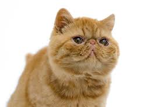
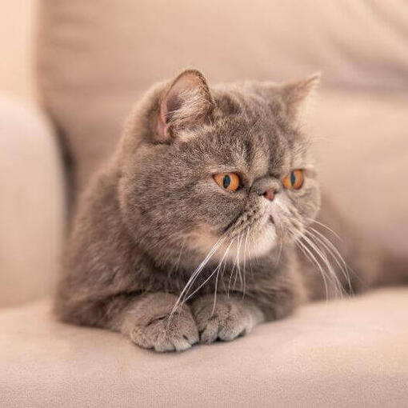
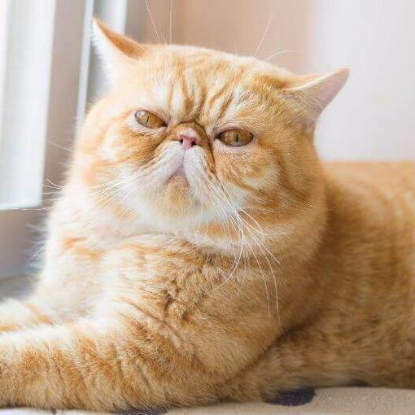

El gato exótico suele ser un gato mediano, a pesar de ser masivo o fornido y de huesos pesados. Tiene un pecho ancho y puede parecer más grande de lo que en realidad es. La raza de gato exótico es de apariencia extrema. El cuerpo es corto pero muy ancho con patas cortas anchas y un cuello corto y ancho.
El exótico de pelo corto es un gato fornido de tamaño mediano. Tiene la cabeza redondeada y ancha, las orejas pequeñas y separadas, y la cara corta y despejada. Los ojos son grandes y redondos y tienen un color vivo. Las patas son cortas, gruesas y fuertes, con zarpas grandes y redondeadas. La cola es corta y tupida. El pelaje es corto, grueso y exuberante, con una capa interna densa y suave. El exótico de pelo corto presenta toda la gama de colores y patrones de pelaje de los persas, y de los atigrados moteados.
Este gato es increíblemente inteligente, afectuoso y obstinado, y se le considera el extrovertido del mundo felino. Tiende a establecer vínculos estrechos con una persona, y suele ser muy locuaz, con una voz grave y contundente. No es un gato que le guste a todo el mundo, sino que es atractivo para un tipo de persona muy concreto.

El exótico de pelo corto tiene el mismo carácter noble y cariñoso que sus parientes de pelo largo y no es tan bullicioso como muchas razas de pelo corto. A los exóticos les gusta quedarse solos en casa y gozar de una vida tranquila.